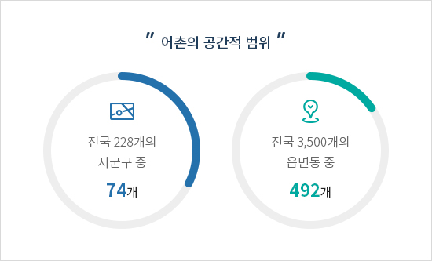
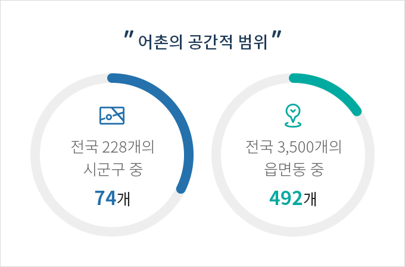
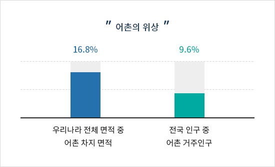
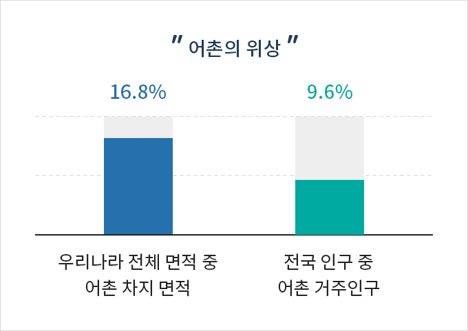

정의
- 홈
- 어항/어촌 정보
- 어촌
- 정의
어촌의 개념
어촌의 정의
‘어촌’이란 하천·호수 또는 바다에 인접하여 있거나 어항의 배후에 있는 지역 중 주로 수산업으로 생활하는 다음 각 목의 어느 하나에 해당하는 지역을 말함- 가. 읍·면의 전 지역
- 나. 동의 지역 중 「국도의 계획 및 이용에 관한 법률」 제36조 제1항 제1호에 따라 지정된 상업지역 및 공업지역을 제외한 지역
※ 관련근거 : 「수산업·어촌 발전 기본법」 제3조 제6호
어촌의 공간적 범위
「수산업·어촌 발전기본법」 제3조 및 「어촌·어항법」 제2조에서 규정하고 있는 ‘어촌’ 즉, 하천·호수 또는 바다에 인접하여 있거나 어항의 배후에 있는 지역 중 상업지역 및 공업지역을 제외한 지역을 계획 수립의 한 범위로 하고 있음어촌의 위상
어촌은 우리나라 면적의 16.8%를 차지하고 있으며, 인구는 9.6%로 정주 및 생산 공간을 이루고 있음(’17년 74개 시군구, 492개 읍면동 기준)


어촌의 공간적 범위
어촌지역은 전국 228개 시군구 중 74개, 전국 3,500개 읍면동 중 492개에 달함
※ 어촌지역은 전국 228개 시군구 중 74개, 전국 3,500개 읍면동 중 492개에 달함


어촌의 위상
어촌은 우리나라 면적의 16.8%를 차지하고 있으며, 인구는 9.6%로 정주 및 생산 공간을 이루고 있음(’17년 74개 시군구, 492개 읍면동 기준)
※ 우리나라 전체 면적 약 100,339㎢ 중 16.8%인 16,904㎢를 차지하며, 전국 인구 약 5,200만 명 중 9.6%인 약 500만 명이거주하고 있음
어항의 역할과 기능
수산물의 생산ㆍ유통기지
- 수산물 위판 및 판매, 출하 기지
- 냉동ㆍ냉장 등 수산물 보관
- 수산물 가공공장 등 상품 생산기지
지역사회 기반시설
- 어촌주민의 생활 기반 및 정주여건 조성
- 어촌지역 경제의 중심지
- 도서, 벽지의 어촌과 외부 사회를 잇는 교통, 정보의 기지
관광ㆍ체험ㆍ교육시설
- 바다낚시, 방파제 산책, 문화공연, 관광유람, 마리나 등 어촌ㆍ해양 관광의 중심지
- 어촌의 문화ㆍ생활을 활용한 바다체험 학습장소